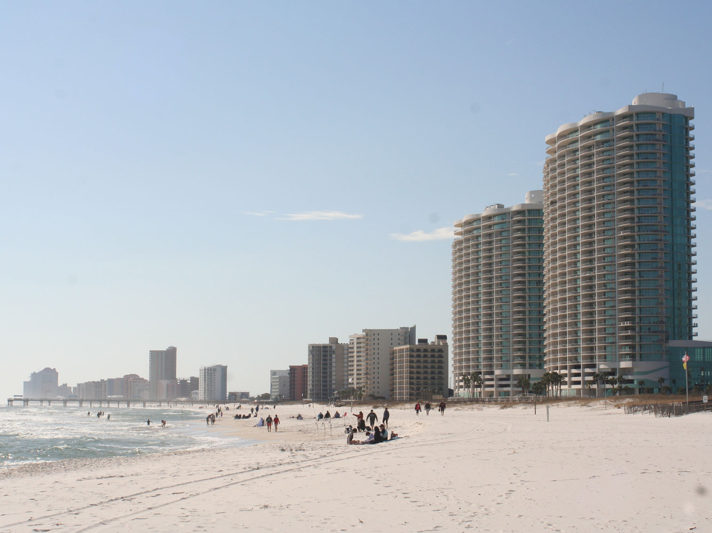
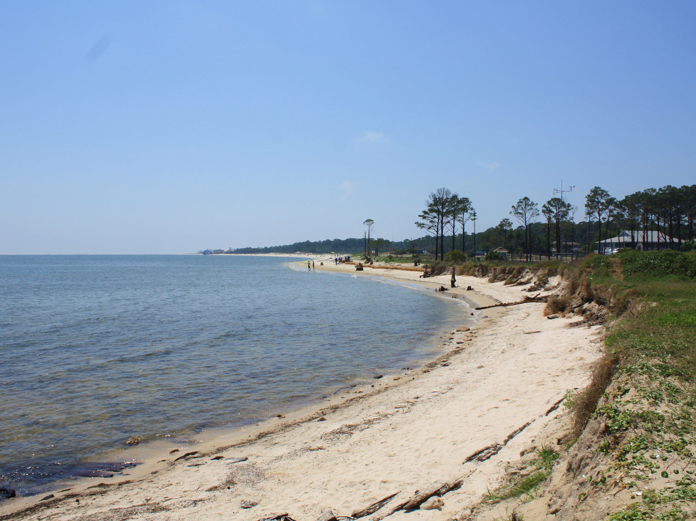

Alabama Travel Guide
Discover Alabama's civil rights landmarks, Gulf Coast beaches, and charming small towns, from vibrant Birmingham to historic Mobile and scenic Cheaha State Park.
Places to See in Alabama

Orange Beach
WeaponizingArchitecture, CC BY-SA 4.0, via Wikimedia Commons

Cities
Alabama Gulf Coast★
Stretch of white-sand shoreline featuring warm Gulf waters, coastal wildlife habitats, fishing piers, nature preserves, waterfront communities, and a wide range of outdoor recreational opportunities.

Dauphin IslandJeffrey Reed, CC BY-SA 3.0, via Wikimedia Commons; Image Size Adjusted

National Protected Areas
Dauphin IslandJeffrey Reed, CC BY-SA 3.0, via Wikimedia Commons; Image Size Adjusted
Dauphin IslandJeffrey Reed, CC BY-SA 3.0, via Wikimedia Commons; Image Size Adjusted
Overview
Alabama is a Deep South state of about 5.1 million people, known for its role in the civil rights movement, its Gulf Coast beaches, and its devotion to college football. Montgomery is the capital, Birmingham is the largest city, and the state is named for the Alabama River and the Alabama people.
Visitors come to walk the route of the 1965 voting rights march in Selma, to tour the Civil Rights Trail in Birmingham and Montgomery, and to see the rocket history of Huntsville. Others come for the white sand of Gulf Shores and Orange Beach, the Mardi Gras heritage of Mobile, the Appalachian foothills at Cheaha, and race days at Talladega Superspeedway.
Geography
Alabama has about 1,500 miles of navigable waterways and a varied landscape. The north is dominated by the southern end of the Appalachians and the Tennessee Valley, with canyons and caves, while the central Black Belt and the Gulf Coastal Plain cover most of the south. Cheaha Mountain, at 2,413 feet (735 m), is the highest point, and Mobile Bay and the Gulf of Mexico form the southern edge. Rivers such as the Alabama, Tombigbee, and Tennessee shaped both settlement and the state's economy.
History
Creek, Cherokee, Choctaw, and Chickasaw peoples lived in the region, and the Mississippian town at Moundville was a major center before European contact. Spain, France, and Britain all claimed the Gulf Coast, and the Mobile area was an early French colony. Alabama became the 22nd state in 1819, grew rich on cotton, joined the Confederacy in 1861, and later became a focal point of the civil rights movement, from the Montgomery bus boycott of 1955 to the Selma marches of 1965. Steel in Birmingham and aerospace in Huntsville drove 20th-century growth.
Alabama Gulf Coast
Alabama's Gulf Coast is a short stretch of about 60 miles with sugar-white sand beaches, warm water, and a relaxed, family-friendly feel. Gulf Shores and Orange Beach are the main resort towns, with condos, fresh seafood, fishing charters, and the dunes and nature trails of Gulf State Park. Dauphin Island is a quieter barrier island and a top spot for birdwatching during spring and fall migrations, and it is home to Fort Gaines, a Civil War fort that guarded Mobile Bay, and the Estuarium. Fort Morgan sits across the bay, and Mobile, home to the USS Alabama Battleship Memorial Park and the country's oldest Mardi Gras celebration, anchors the region. Summer is peak season, and hurricane season runs from June through November.
Civil Rights Movement Sites and Museums
Alabama was the central battleground of the civil rights movement, and many of the places where history was made have been preserved. In Montgomery, the Rosa Parks Museum and the Dexter Avenue King Memorial Baptist Church recall the 1955 bus boycott, and the Legacy Museum and National Memorial for Peace and Justice explore slavery, lynching, and racial injustice. In Birmingham, the Birmingham Civil Rights Institute, the 16th Street Baptist Church, and Kelly Ingram Park mark the 1963 campaign and bombing. In Selma, the Edmund Pettus Bridge, the National Voting Rights Museum, and Brown Chapel AME Church are linked to the 1965 voting rights marches, and the Selma to Montgomery National Historic Trail follows the route. National Park Service sites include Tuskegee Institute, the Tuskegee Airmen, and Freedom Riders National Monument.
North Alabama and the Huntsville Area
North Alabama is a region of the Tennessee Valley, the southern Appalachian foothills, caves, canyons, and rivers. Huntsville, the "Rocket City," is the area's biggest city and the home of NASA's Marshall Space Flight Center, where Wernher von Braun's team developed the Saturn V rocket that took astronauts to the Moon. The U.S. Space & Rocket Center has a Saturn V on display and the popular Space Camp, and the city also has the Huntsville Botanical Garden and Big Spring International Park. Nearby, Little River Canyon and Noccalula Falls offer scenic waterfalls and gorges, Cathedral Caverns has an enormous cave entrance, Cheaha State Park contains the state's highest point, and Florence is known for its music heritage at Muscle Shoals.
Birmingham
Birmingham is Alabama's largest city and a former steel capital that grew rapidly after its founding in 1871, when iron ore, coal, and limestone were all found nearby. That industrial past lives on at Sloss Furnaces National Historic Landmark, and the iron statue of Vulcan, the largest cast-iron statue in the world, looks over the city from Vulcan Park and Museum. The city is a hub for civil rights history, and it is also known for its barbecue and Southern restaurants, craft breweries, and the Birmingham Museum of Art, the Botanical Gardens, and Railroad Park. Outdoor options include Ruffner Mountain, Red Mountain Park, and Oak Mountain State Park, and the Barber Vintage Motorsports Museum holds the world's largest motorcycle collection.
Montgomery
Montgomery, the state capital, played a pivotal role in both the Confederacy and the civil rights movement. It was the first capital of the Confederate States of America in 1861, and Jefferson Davis took the oath of office on the steps of the Alabama State Capitol. Less than a century later, Rosa Parks refused to give up her bus seat in 1955, sparking the Montgomery bus boycott led by Martin Luther King Jr., and visitors can see the Rosa Parks Museum, the Dexter Parsonage Museum, and the Freedom Rides Museum. The Legacy Museum and National Memorial for Peace and Justice have become national destinations. The city also has the Hank Williams Museum, the Montgomery Museum of Fine Arts, and Old Alabama Town, a collection of restored 19th-century buildings.
National Protected Areas
Alabama's national park sites reflect its history and landscape. Tuskegee Institute and the Tuskegee Airmen National Historic Sites honor Booker T. Washington and the Black pilots of World War II, Freedom Riders National Monument marks the 1961 bus attack near Anniston, and Horseshoe Bend preserves an 1814 battlefield. Russell Cave holds evidence of 10,000 years of habitation, Little River Canyon National Preserve has waterfalls and a deep gorge, and the Selma to Montgomery National Historic Trail follows the voting rights march route.
State Parks and Historic Sites
Alabama's state parks range from mountains to the beach. Oak Mountain near Birmingham is the largest, DeSoto and Cheaha have waterfalls and mountain views, and Cathedral Caverns and Rickwood Caverns offer cave tours. Gulf State Park has beaches and trails, Fort Morgan guards Mobile Bay, and Moundville and Tannehill Ironworks preserve prehistoric and industrial history.
Seasons and When to Visit
Spring and fall are the best seasons, with comfortable weather for hiking and sightseeing, azaleas and dogwoods in March and April, and fall football weekends. Summer is hot and humid but is peak season on the Gulf Coast, where beaches are busiest from Memorial Day to Labor Day. Mardi Gras in Mobile begins in January and builds to Fat Tuesday. Winters are mild in the south, cool in the mountains, and Alabama's tornado season runs mainly from March through May and in late fall.
This article uses material from the Wikipedia article "Alabama", which is released under the Creative Commons Attribution-Share-Alike License 3.0. Additional information was drawn from National Park Service, Alabama State Parks, and Alabama Tourism Department.